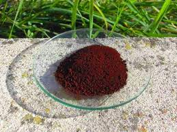

In chimica analitica (quella classica) mi è sempre piaciuto il connubio Inorganica-Organica, cioè l'uso di reagenti organici per la rilevazione di un catione o di un anione.
Gli esempi sono tanti: la benzoinossima, il cupferron, la dimetilgliossima, la difenilcarbazide, l'aluminon, la brucina, eccetera, eccetera.
Come si vede, talvolta il lungo nome chimico viene sostituito da un altro più breve ed intuitivo per comodità d'uso; ci troveremo altrimenti in qualche situazione imbarazzante: anzichè aluminon, dovremmo dire... sale ammonico dell'acido 5-[(3-carbossi-4-idrossifenil)(3-carbossi-4-osso-2,5-cicloesadien-ilidene)metil]-2-idrossibenzoico!
---°°°OOO°°°---
Due bei reagenti organici per il magnesio prendono il nome (e qui non ci vuole tantissima fantasia) di Magneson I e Magneson II.
Entrambi derivano dalla diazotazione della p-nitroanilina e successiva copulazione rispettivamente con la resorcina o l'1-naftolo; le reazioni portano alla formazione del p-nitrobenzen-azo-1,2-diidrossibenzene o del p-nitrobenzen-azo-1-naftolo.
Questi prodotti, come tutti i numerosissimi simili, sono coloranti azoici molto potenti, poco o per niente solubili in acqua.
Scorrendo per l'ennesima volta quella bibbia dell'organica sperimentale che è il Vogel, mi è capitata sottomano la sintesi del Magneson II, che mi sono affrettato a provare proprio per il motivo spiegato all'inizio.
A differenza della versione I (con la resorcina), è assai difficile reperire notizie esaurienti sul composto II, tant'è che dopo averlo preparato ancora mi rimane il dubbio sull'esatto colore che dovrebbe avere il prodotto puro.
La sintesi mi ha fornito un prodotto rosso-marrone molto scuro (testa di moro, si diceva una volta), e non è detto che non sia prorio così... comunque il Magneson II è questo:

Materiali occorrenti
- p-nitroanilina NO2-C6H4-NH2
- sodio nitrito NaNO2
- 1-naftolo C10H7-OH
- NaOH
- HCl
- acqua distillata
- vetreria opportuna
[Non ho foto della sintesi questa volta]
In un becher da 100 ml sciogliere 2 g di p-nitroanilina in una miscela di 5,5 ml di HCl conc. + 5,5 ml di acqua, scaldando leggermente.
L'ammina, basica, si scioglie facilmente originando il cloruro, che si separa per raffreddamento sotto forma di minuti cristallini.
Porre il becher in un bagno di ghiaccio su agitatore e, facendo in modo che la temperatura non salga oltre i 5°, aggiungere goccia a goccia una soluzione formata sciogliendo 1,5 g di sodio nitrito in 3,5 ml di acqua.
La diazotazione è terminata quando il test eseguito con un cartina amido-iodurata risulta positivo.
Preventivamente si sono sciolti anche 2,1 g di 1-naftolo in una soluzione di 2,8 g di NaOH in 10 ml di acqua, e sono stati raffreddati anche questi in ghiaccio.
Sotto vigorosa agitazione, aggiungervi piano piano la soluzione diazotata. Si forma un precipitato viola scuro, sempre più denso, quindi contribuire all'agitazione con una bacchettina di vetro.
Alla fine, aggiungere allo stesso modo dell'HCl conc. fino ad acidità decisa.
Il colore dovrebbe cambiare da viola molto scuro a rosso molto scuro.
Filtrare sotto vuoto e lavare con acqua fino ad eliminare la parte solubile e l'acidità residua e lasciar seccare all'aria.
Si ottiene una polvere di color bruno con riflessi rossastri, di leggerissimo odore fenolico; scogliendone una piccolissima quantità in NaOH diluita (con acqua distillata!) si ottiene una soluzione rosa-violacea.
Il prodotto è praticamente insolubile in acqua e poco solubile anche in alcol, fornendo tuttavia un liquido rosso arancio talmente scuro che è difficilissimo vedere quando la soluzione è satura.
Volevo provare a ricristallizzare (ho fatto qualche prova con metanolo), ma non trovando niente in bibliografia non è consigliabile andare alla cieca.
Ecco sul solito muretto i 5,6 g di Magneson II ottenuti.

Perchè poco sopra ho sottolineato "acqua distillata"?
Perchè il p-nitrobenzen-azo-1-naftolo è un reattivo estremamente sensibile per il magnesio (non per niente si chiama Magneson!) e se per preparare il reattivo si usasse acqua di rubinetto (che contiene altre al calcio anche un po' di magnesio) si avrebbe subito la reazione... in questo momento indesiderata!
Quella desiderata la vedremo la prossima volta.